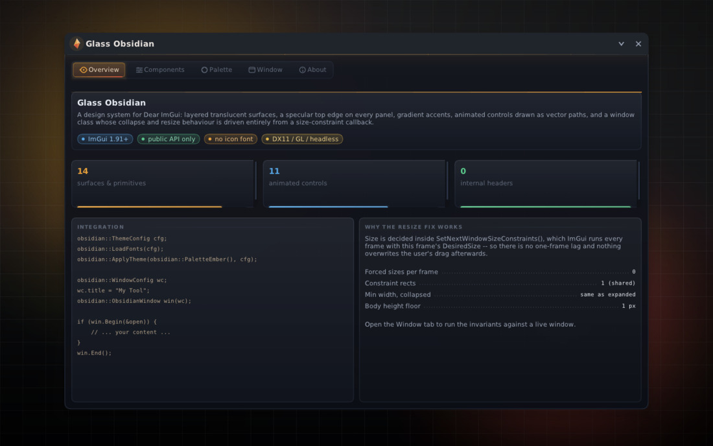
01 · Overview
Hero panel with accent top-edge, stat cards with gradient meters, and two fill-height columns. The window chrome, tab strip and panels are all translucent — the bloom behind them is the ambient backdrop.
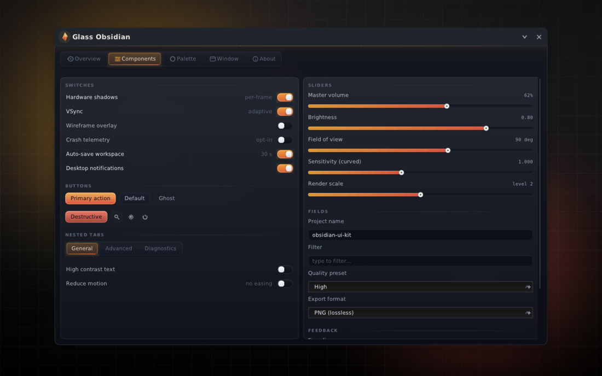
02 · Components
Toggles, gradient sliders, buttons, nested tabs, text inputs and combos — all drawn as vector paths, no textures.
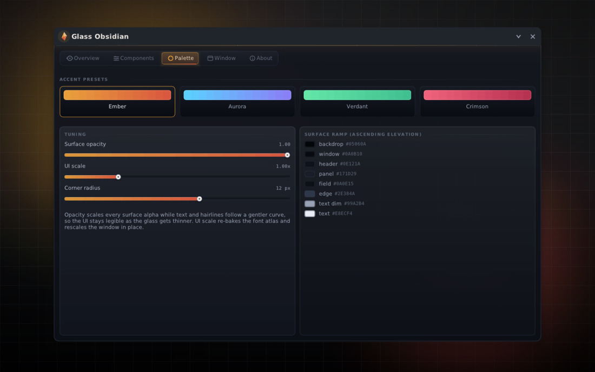
03 · Palette studio
Accent presets, live surface-opacity / UI-scale / corner-radius tuning, and the ascending surface ramp with hex read-outs.
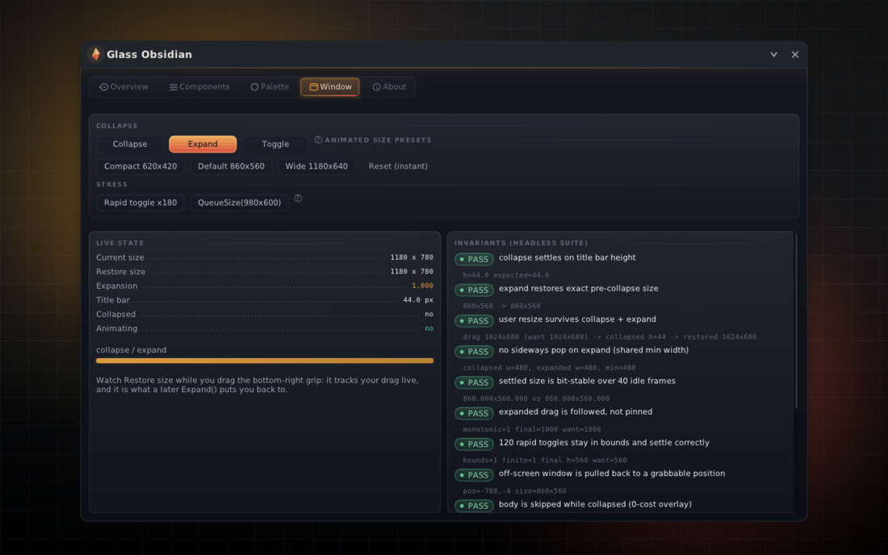
04 · Window bench
The collapse/resize controls plus the live invariant suite results rendered inside the UI itself.
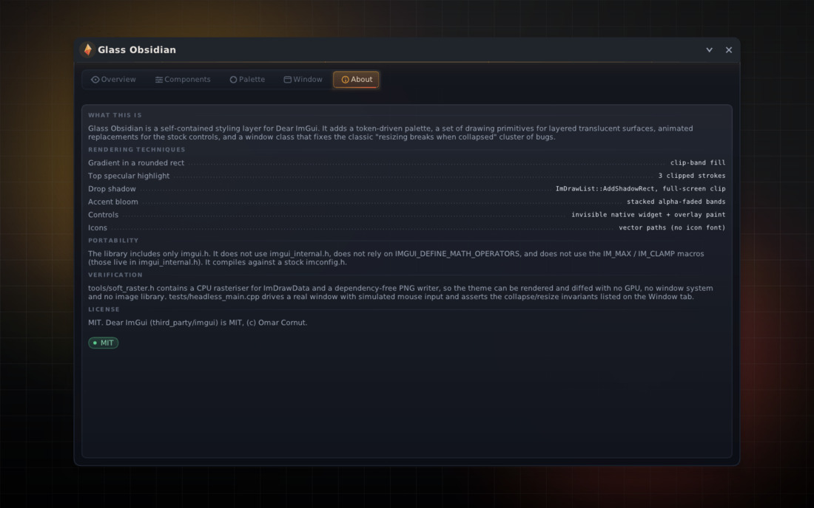
05 · About
Scope, guarantees and the exact recipe of the resize fix.
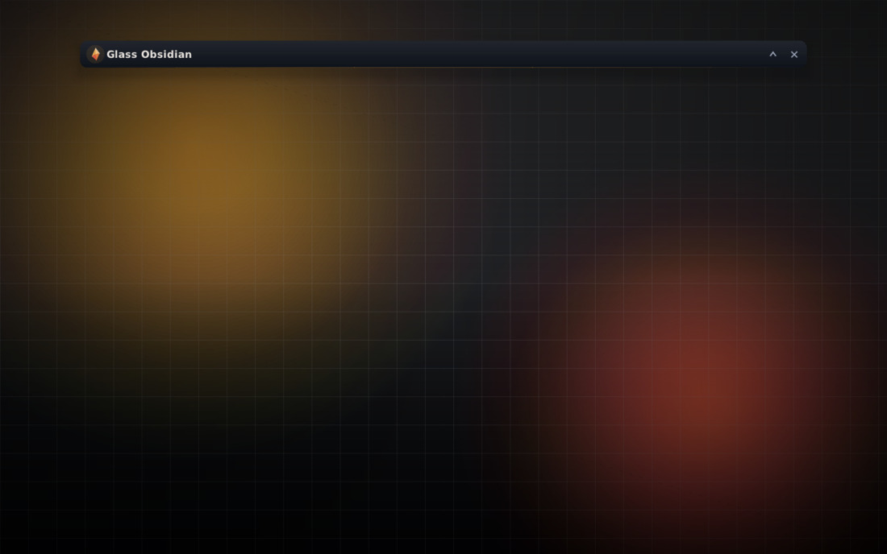
06 · Collapsed
Settled state is exactly the title bar height; the body is not submitted at all, so a collapsed overlay costs (almost) nothing.
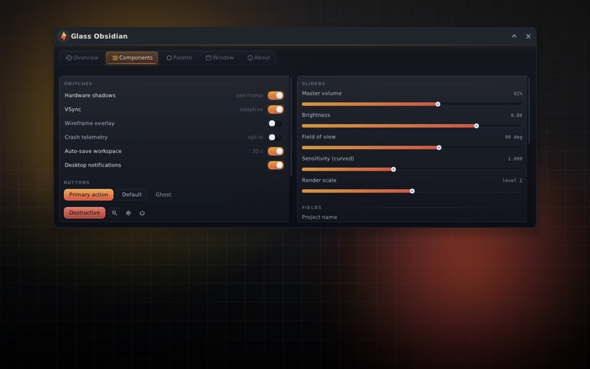
07 · Mid-collapse
The morph frozen ~40% through: height, body clip and opacity are driven by the same eased timeline.
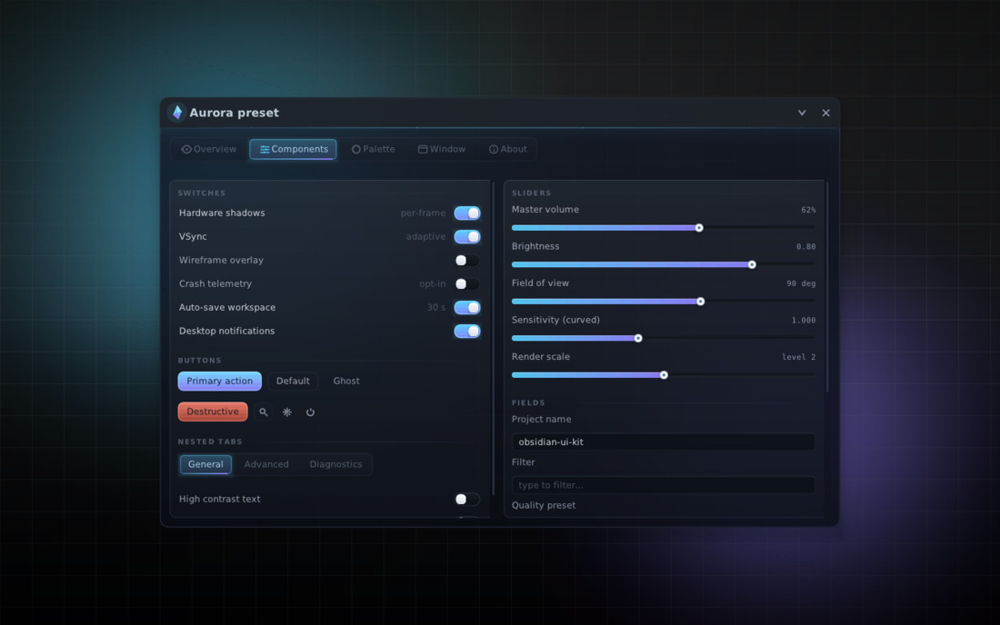
08 · Aurora preset @ 0.80 opacity
Every token re-derived from one palette struct; translucency shows the backdrop through the glass.
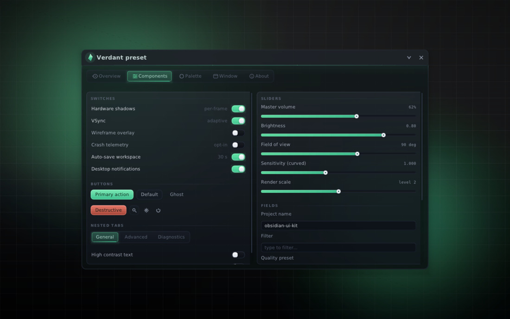
08 · Verdant preset
Same layout, different accent ramp.
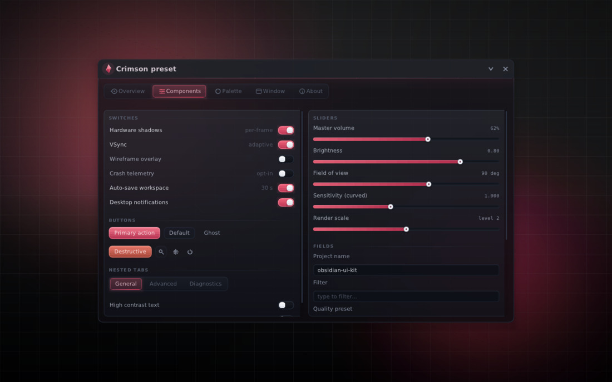
08 · Crimson preset
Warm red accent, cooler glass.
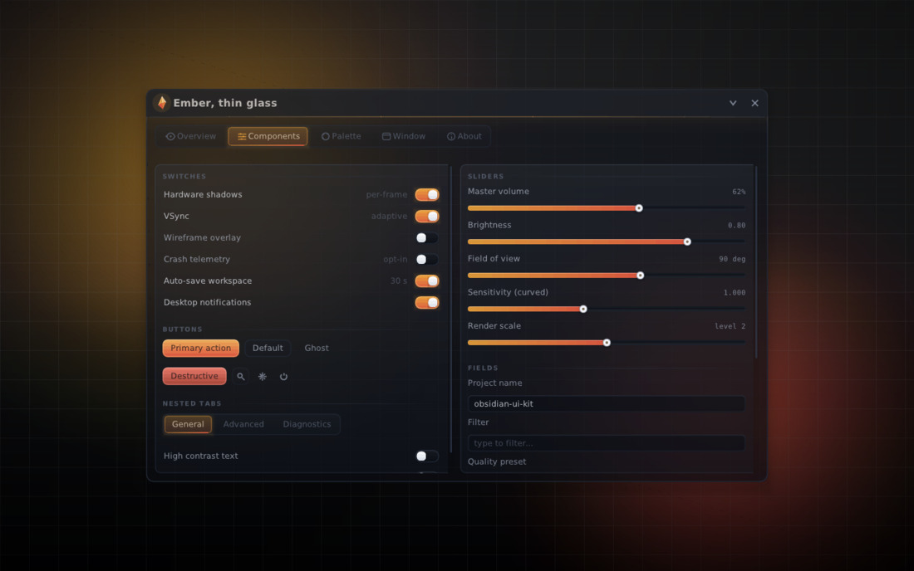
08 · Ember, thin glass (0.62)
Opacity floor test: text and hairlines follow a gentler alpha curve so the UI stays legible as the glass thins.
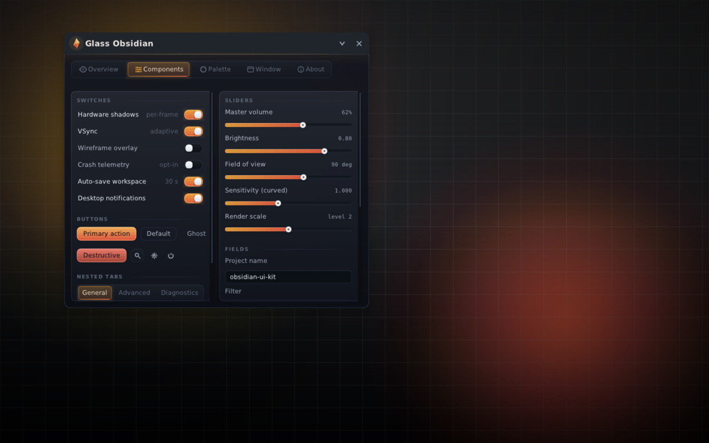
09 · Compact 620 px
Single-column fallback: every control still reachable at the shared minimum width.
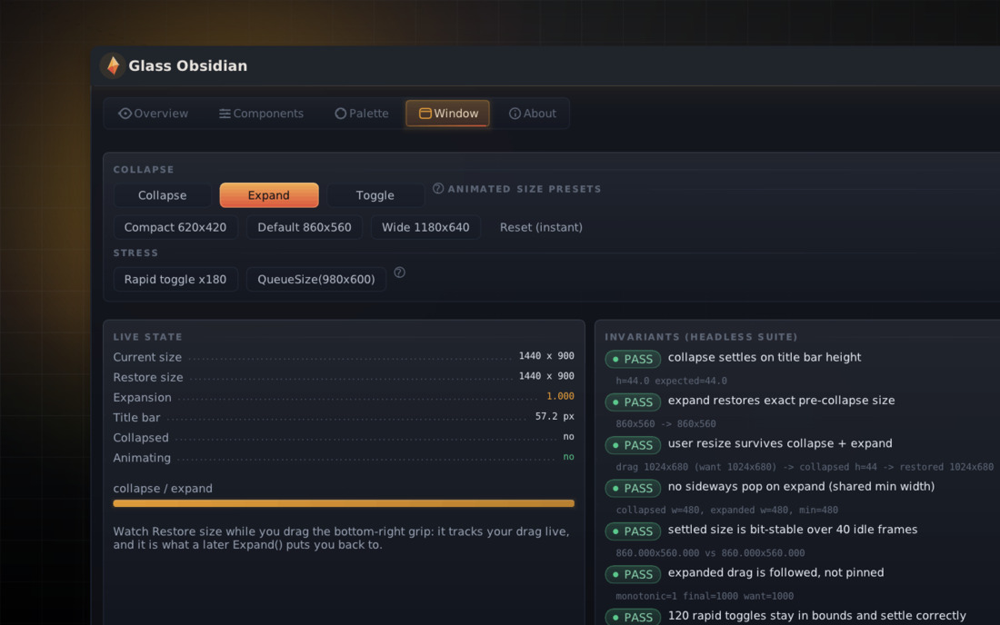
10 · ui_scale 1.30
Font atlas re-baked and window rescaled in place — nothing clips.
The Axiom layer, on the real menu
These eleven are not a demo. They are
roblox external/ui/menu_ui.cpp — the host application's menu —
rendered by tools/menu_shots.cpp against stub platform callbacks, through
the same software rasteriser. Because the layout file touches no Win32 and reads no
process memory, the picture below is what the overlay draws, which is the only
practical way to review a grid change without the game running. Labels are
tracked caps because the widgets shout them; notes and hints are ordinary
sentences, because a paragraph in caps is unreadable. The last few are states
rather than pages — the ones a page loop cannot reach, because they need a
setting and a runtime value to say something in particular together.
The filing rule for the pages, after a pass that moved things onto the tab that owns them: a setting lives where the decision is made, and a tab that borrows it says so in the group name. Which is how the hitbox expander ended up on the aimbot page, the inventory checker and the blacklist's ESP switch on visuals, every bind alone on the keybinds tab, the flight latch phrased like the aimbot's, and two of the duplicate switches gone. The rail counts moved with the settings they count, because a number that stays behind starts lying about its own tab.
The next pass took the same rule to the camera: FOV is how much of the
screen you see and freecam is the point of view you see it from, so both moved to
visuals and the movement page is now only the writes that move your character —
which it shares into two groups, one for how it moves and one for how it arrives
somewhere. That pass also moved filing from taste to test: the menu exposes
HasGroup("page/name"), so the headless harness asserts that visuals owns
the camera and that movement no longer owns a view group. A screenshot of
the page a card moved to looks correct either way; only the old tab can say
whether it let go.
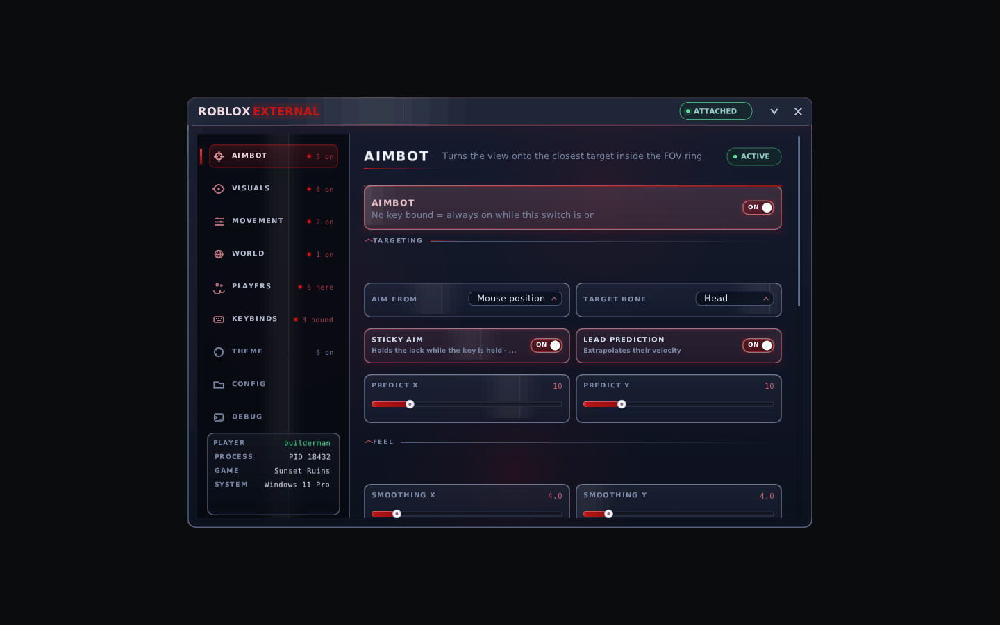
01 · Aimbot
Hero switch for the master toggle — the only one, a second
enabled card lower down used to control the same global from the same
page — then targeting / feel / filters / hitbox / key. Sub-controls appear as
their parent switches on, and the grid keeps every row aligned. The hitbox
expander moved here from the visuals tab: making their hitbox bigger changes
what your bullets hit, which is a combat setting, not a drawing.
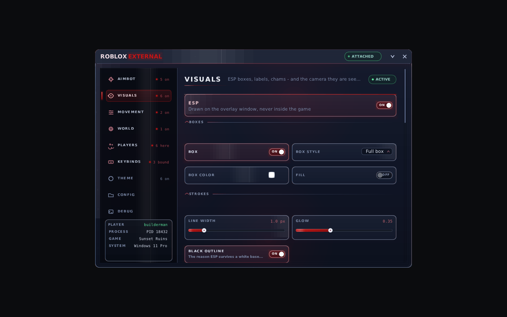
02 · Visuals
The densest page: twenty-five toggles in eight groups, a colour card beside
every one that needs one, and two groups that are the overlay's own vocabulary
— a shared stroke weight (box, corners, skeleton, health bar, tracers all
honour esp_line_width) and the tracer block. One group says in its name
who else it belongs to: team check, wall check and hiding blacklisted names are
filters the aimbot decides and the ESP obeys, so the toggles live with the
decision and the drawing consequences — the team tint, the inventory
readout, the expanded hitbox — live here. The last group is the camera
(FOV changer, freecam), moved over from movement and deliberately after the
drawing groups: everything above it is drawn on the overlay, and this is the thing
the overlay is drawn on.
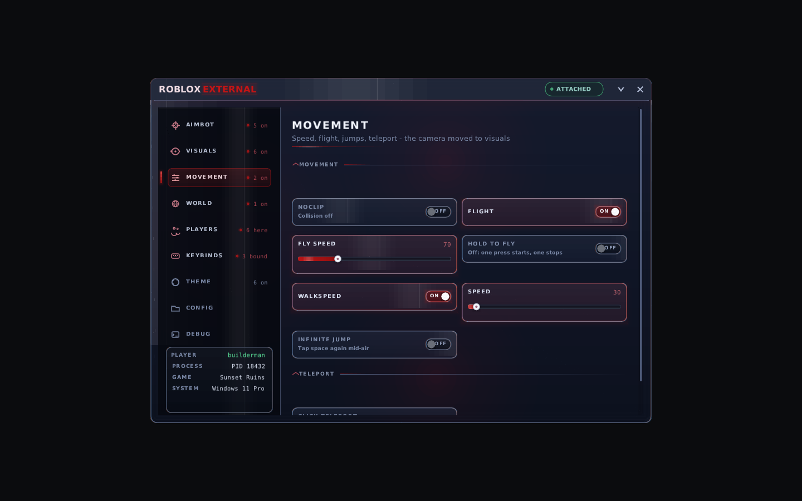
03 · Movement
Sliders that belong to a feature are marked live (accent edge), so you can see what is actually armed without opening a tooltip. The six bind rows that used to end this page are gone: they are on the keybinds tab, grouped once, and a copy here meant two answers to “where do I set that”. The camera used to be here too, and its old group is what the subtitle sends you to visuals for; what is left now splits into movement (noclip, flight, walkspeed, infinite jump) and teleport (the click, its range cap and its landing height) — five switches about how the character moves, and one about arriving at a place.
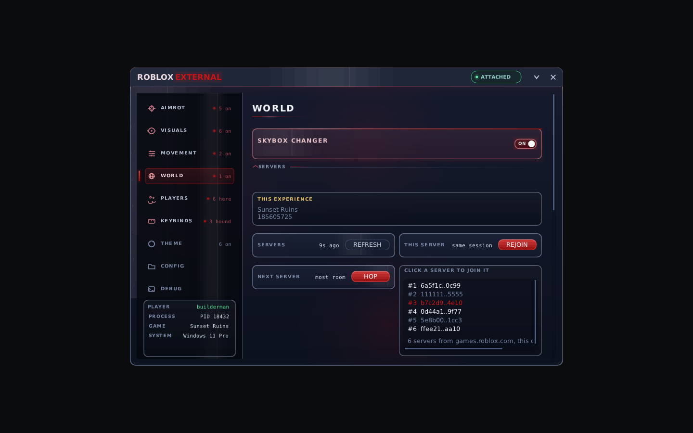
04 · World
A combo card and a note card reporting what the renderer said back — the skybox changer's debug string, surfaced instead of logged.
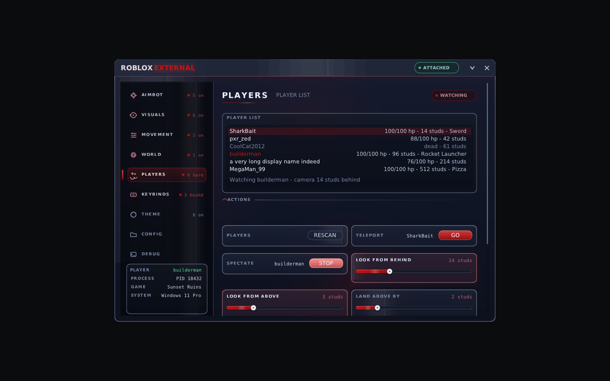
05 · Players
Everyone in the server except you, with health, distance and weapon right-aligned so the column scans. Click to pick, double-click to jump, WATCH to spectate. Dead rows are dimmed (0 hp with a readable max health — a failed read is unknown, not dead); the one you are watching wears the accent. The dim line inside a button card now carries only who it will act on: “force refresh” under a button reading RESCAN was the card saying it twice, and it is gone.
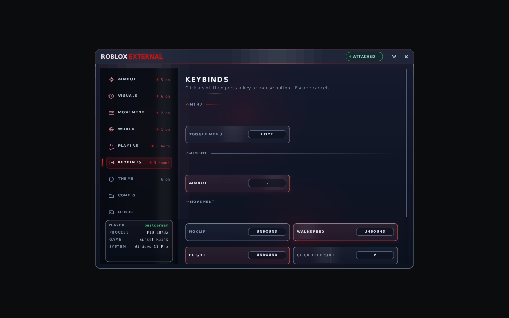
06 · Keybinds
Every bind is a card; clicking it hands capture to the app's key poll, and the row's own dot reports whether any bound feature is live. Escape cancels. Four groups — menu, aimbot, movement, visuals — each named after the tab that owns the setting the key flips, which is why freecam and the inventory checker are not filed under “movement” just because one of them moves you, and why the last category name (“view”) is gone: a bind page groups by owner, because that is the question it answers — “what does this key move?”.
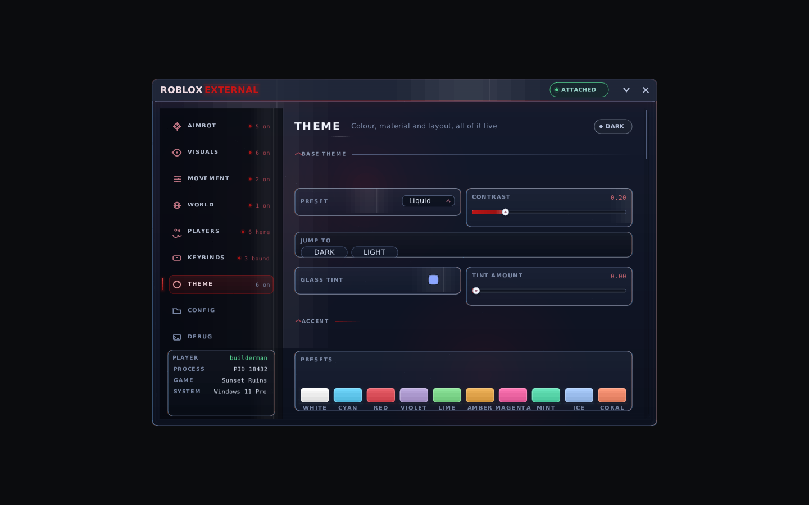
07 · Theme
Nine collapsible groups, and every control in them repaints the menu the frame it moves: preset, contrast, tint, accent, five rainbow modes, a polish switch for the whole material layer and the ten strengths under it, window size and limits, ui scale, font sizes, grid columns, card and row metrics, rail shape, and which chrome is visible at all. There is no window bloom here on purpose — the menu paints nothing outside its own rect, not even ImGui's stock window shadow.
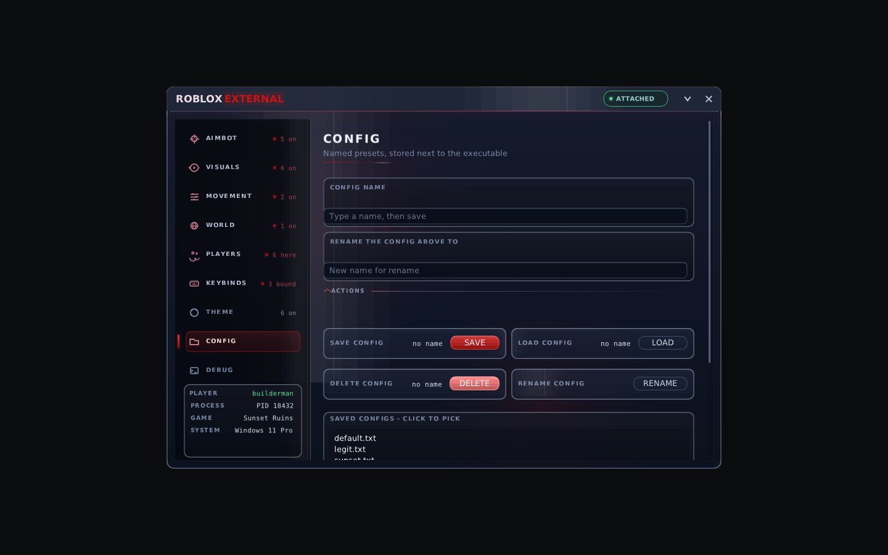
08 · Config
Name field, save / load / delete cards, and a scrollable list of the files on disk with the count in the rail hint.
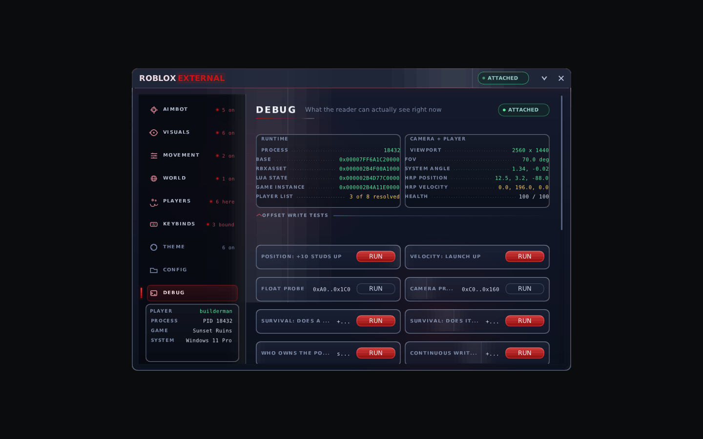
09 · Debug
Two stat cards side by side (pointers, validity, view matrix, local player), three write tests, the last result, and the log with clear / copy.
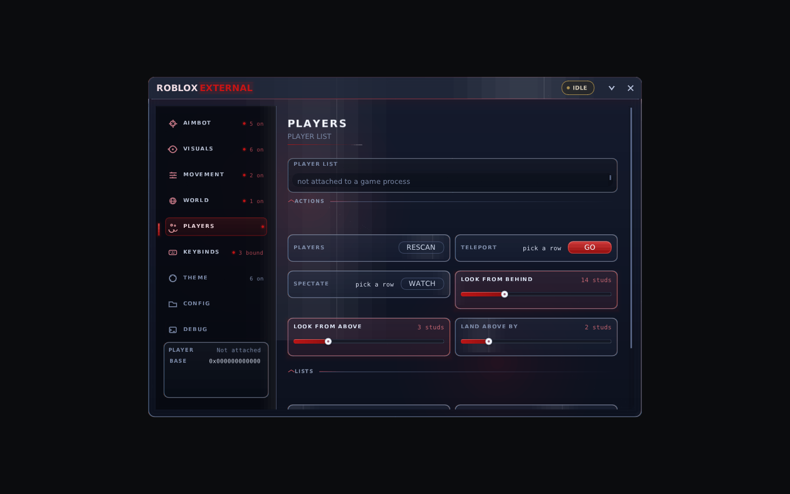
— · Not attached
The state no page owns: no process, no place name, no players. The rail gives up its brand row and keeps only the status chip, and the footer says what is missing instead of printing zeroes.
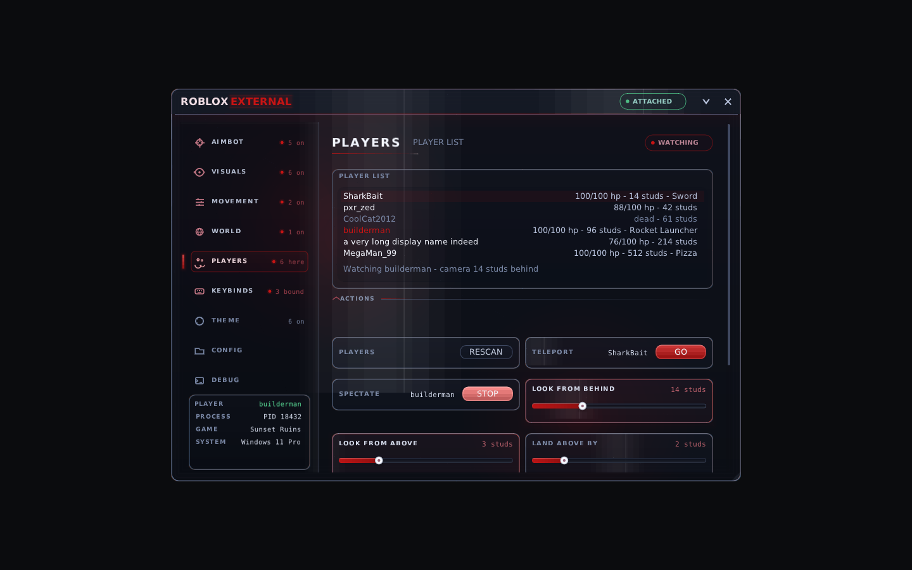
— · Transparency at 90%
Fade is a property of surfaces, not of text: the fills and their edges recede and the letters stay where they were, so the menu stays readable over a bright skybox at the setting's maximum.
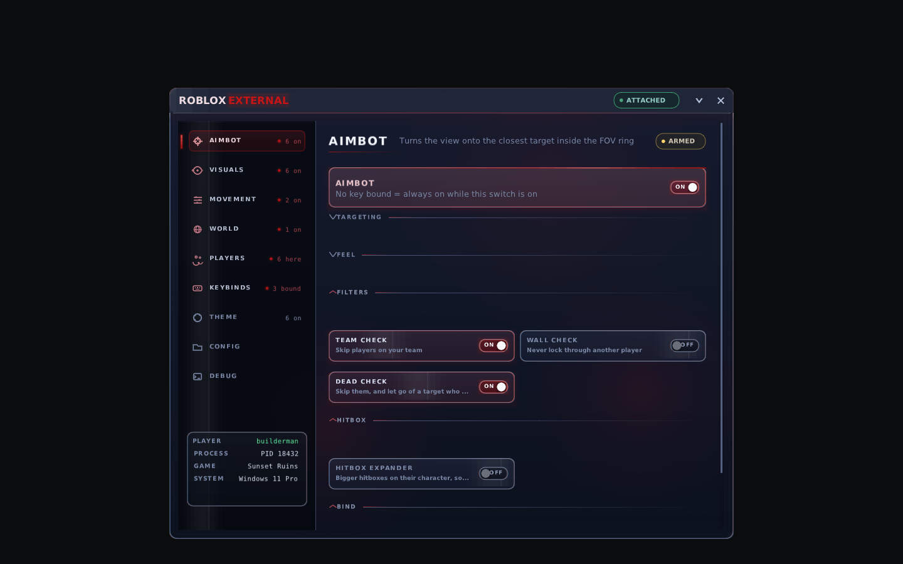
— · Aimbot key, latched
“Hold to aim” off makes the key a latch: one press arms it, the next disarms it. A toggle whose state you cannot read is a footgun, so the page says armed in the header instead of active, the hold card's hint says what the latch is doing, and the rail row lights with it. The menu cannot ask the feature anything — that is what the snapshot is for — which is exactly why this needed a frame: if the wiring is missing, only a picture says so.
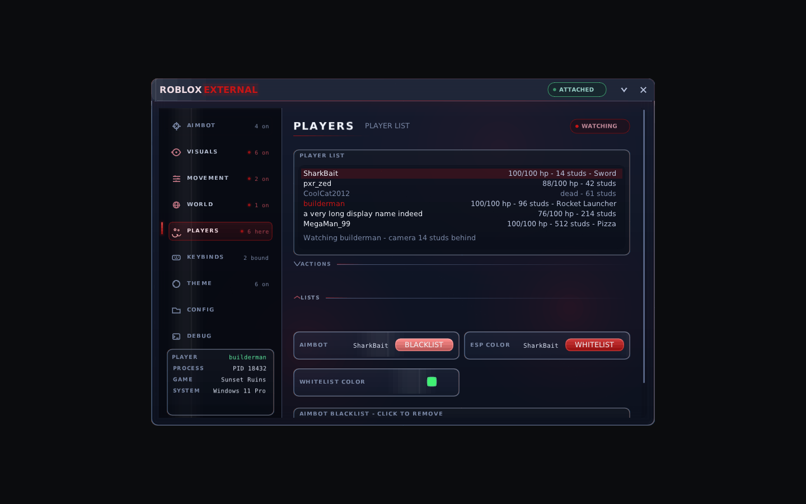
— · The blacklist, one job
The card used to read “aimbot + esp”: two features in one label, and a promise the list no longer makes by default. It is the aimbot blacklist now, the scroll card says so, and hiding those names from ESP is its own switch — “do not aim at them” and “do not draw them” are decisions a user may want separately, and a friend you never want to lock onto is still someone you may want to see through a wall.
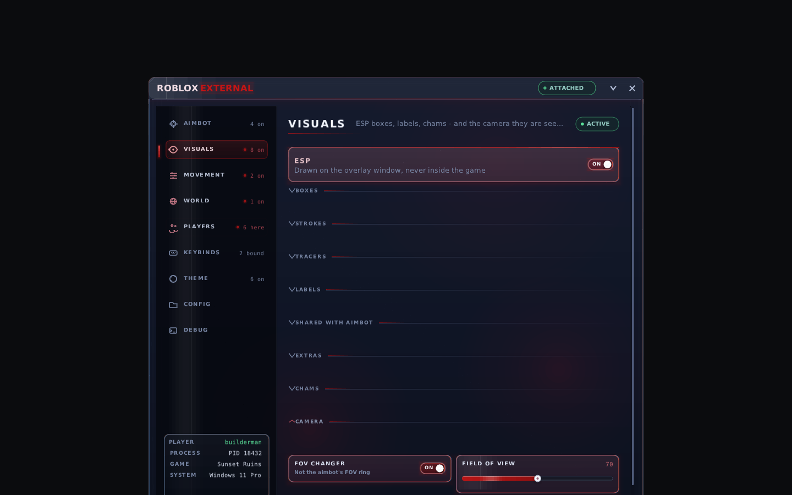
— · The camera, filed with the look
The moved group, framed by closing the seven groups above it — it is the last thing on a page taller than the window, so a shot that clipped it would have proved nothing, and the frame is 820px rather than 620 for exactly that reason. Both switches are on, because a slider its own card reveals is the layout that gets used, and the one most likely to overflow a cell.
Nine palettes, two knobs, one frame
The page loop above can only ever shoot the default theme, which is exactly the blind spot a theme system needs closed: a light preset that is only light in its own token names, a contrast knob that washes text out instead of hardening it. So the harness walks the same table the theme page offers — all nine — and asserts two things in numbers rather than by eye: that the ink sits on the correct side of its surface for the preset's polarity, and that text on panel clears 4.5:1 (3:1 for the dim label step). The three pictures here are the ones worth a look; the frames after them are the settings that change the window's structure or its material rather than its hue, which is where a layout actually breaks and where a colour-only review would miss it.
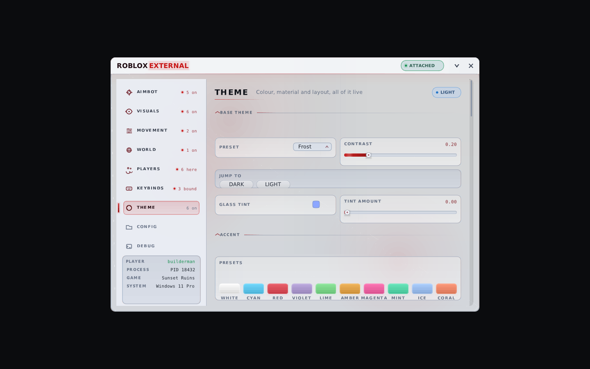
t3 · Frost
Light frosted glass over dark ink, at 11.3:1. Elevation runs the other way
from the dark themes — hover and selection darken — which is
what Palette::light exists for, and why this is a light theme
rather than a dark one with the surfaces inverted.
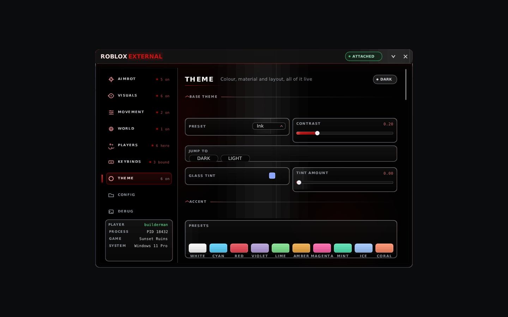
t2 · Ink
Pure black, pure white, no accent wash anywhere: 15.5:1 with the whole material still on. A high-contrast theme is not a flat one, it is a theme where the colour means state and nothing else does.
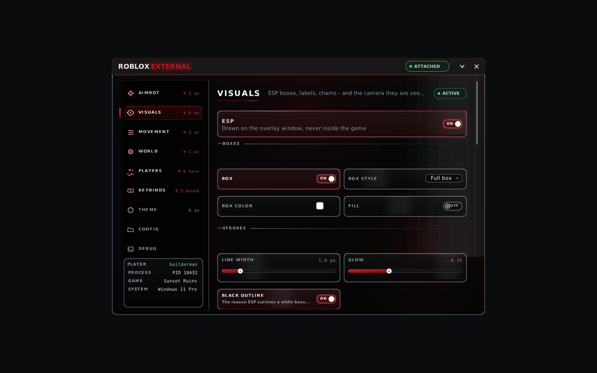
— · Contrast 1.0
The contrast knob on Obsidian: surfaces go flat toward the extreme of their polarity (near-black pixels, which is also the OLED setting), the steps between them widen instead of collapsing, the accent washes pull back — and transparency is untouched, because that is a dial the user set.
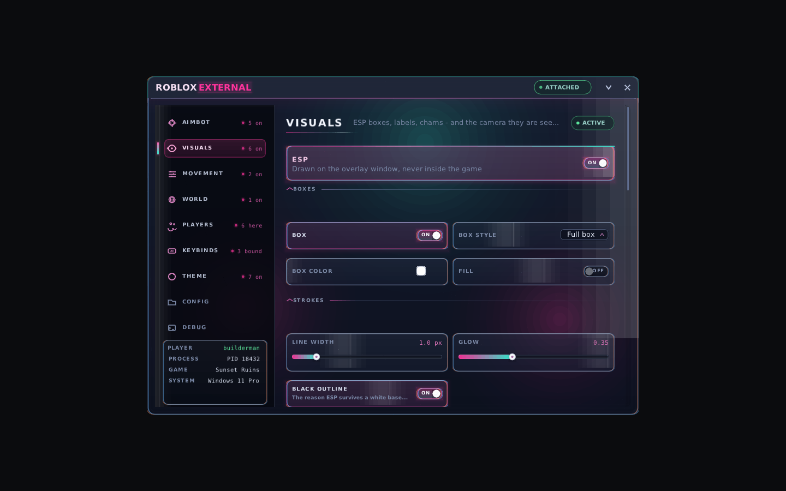
— · Rainbow: sweep
Five modes, not one: cycle, sweep (the accent pair travels, keeping its hue interval), breathe, duotone (fills cycle, text stays put), off. Every one of them derives its colour from the clock at render time and never writes into the stored accent — so a config saved mid-cycle keeps the colour that was picked, and switching the mode off needs no stashed previous value.
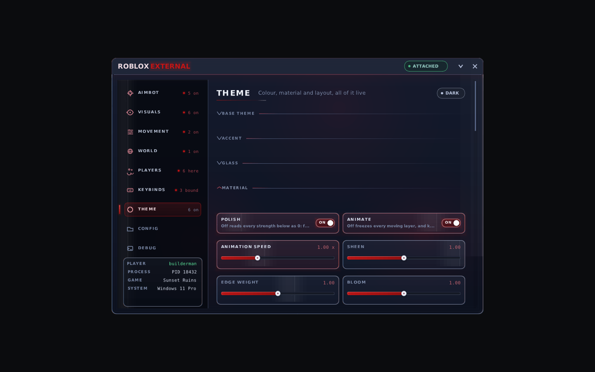
— · Three groups closed
Base theme, accent and glass closed from the config file's string. A closed group submits nothing — no empty card, no orphan divider, no clipped row — so what was underneath moves up to fill it. That is the whole reason the state is a list of closed ids and not a bool per group: the default (all open) is free, and a renamed group costs nothing.
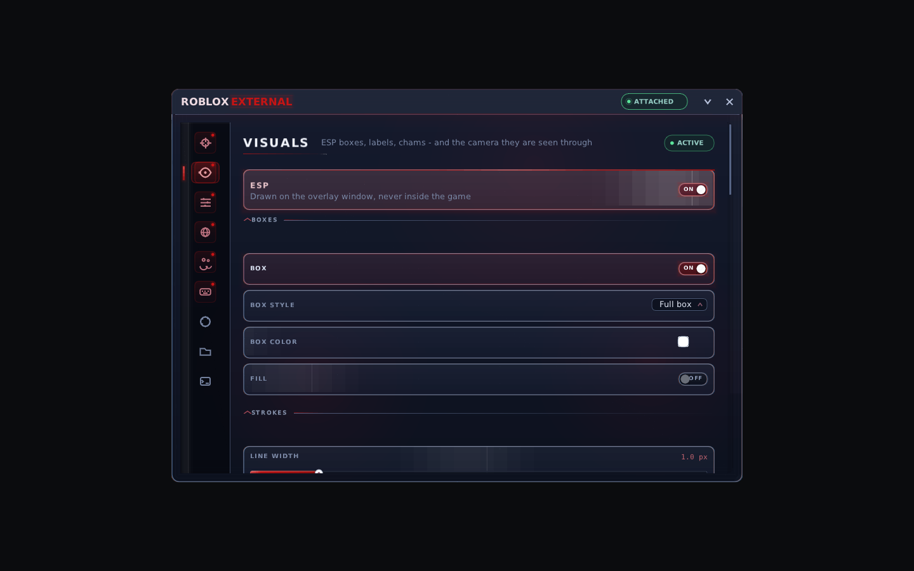
— · Icons, 1 column, 150%
The combination most likely to overflow and the one a small screen actually picks: icon strip, single column, everything at 1.5×. The session card is gone in this mode because four lines of label/value text do not fit in 56px, and the bleed check on this shot is what says the rest still does.
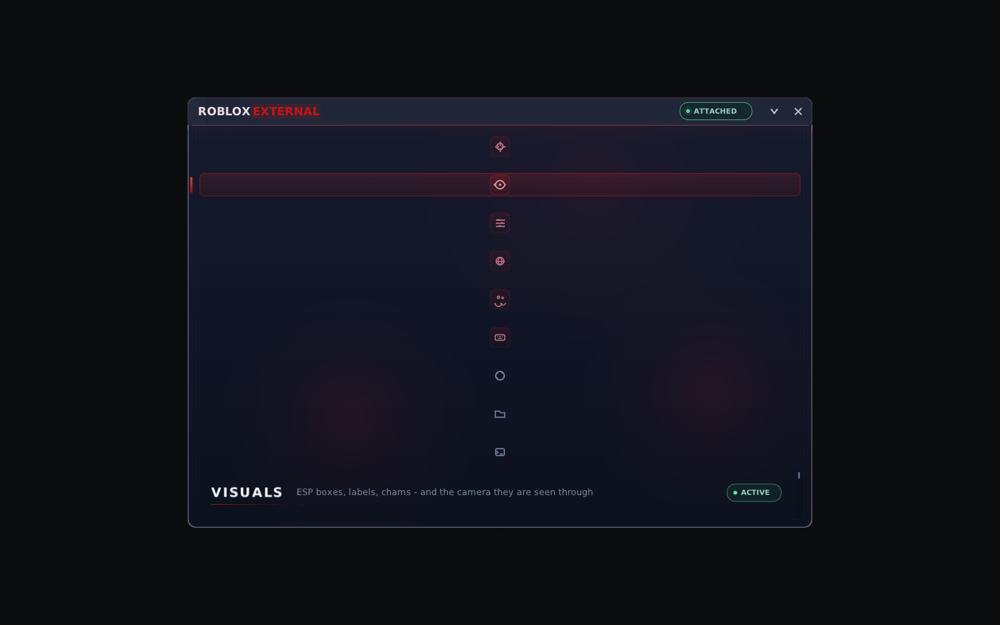
— · Rail hidden
With no sidebar child at all the nav rows and the page are submitted to the window itself — the case where a child-only clip assumption shows up. Hiding the rail is not cosmetic: it buys the page 220px, which is a second column at 1080p.
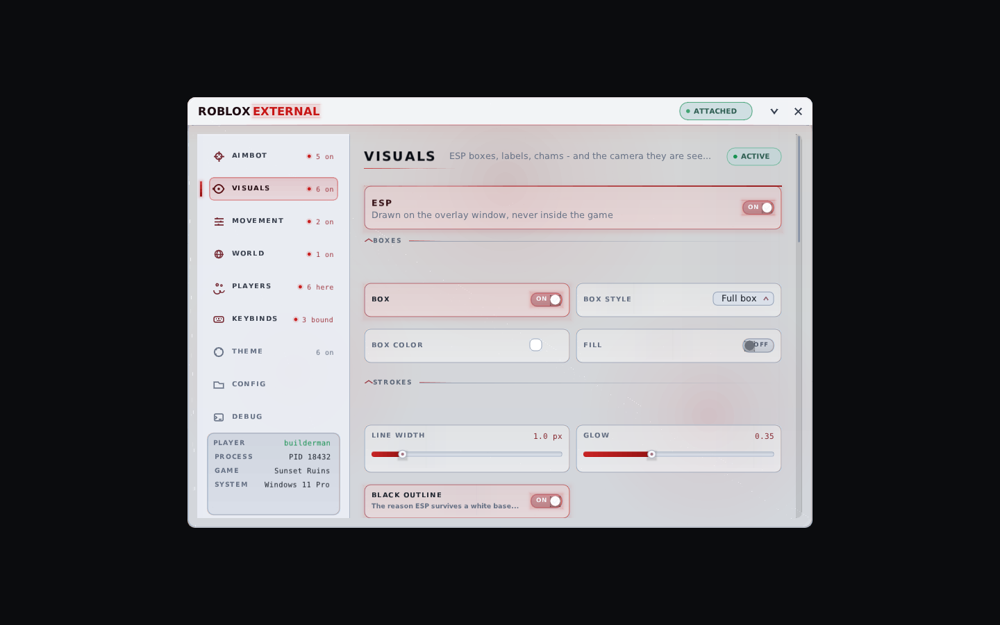
— · Light theme, densest page
Frost pushed through the page with the most controls on it, checked against the window rect: a light preset breaks differently from a dark one, because the page is drawn in screen space on the container's list and an off-window card is invisible in every other shot here.
The material layer, on one switch
Ten dials is the right amount of control and the wrong amount of work
for “can you turn that off”. Material::polish is the master
multiplier: it folds into the ten strengths once, when a palette is installed, so
every draw site simply reads 0 and draws nothing — no sheen, no bloom, no frost
ring, no travelling band, flat surfaces. What it deliberately does not touch
is animate / speed (freezing movement and removing shine are
two questions) and the values you dialled in: the sliders keep their numbers, so the
same picture with the switch flipped back on is the material you tuned, to the digit
— which is asserted, both ways, by build/menu_shots. Dragging one
of those sliders while polish is off turns polish back on, because wanting the dial is
the only reason to reach for it. The two frames share a layout on purpose: the three
groups above material are closed so the switch is at the top of the shot,
which is also the collapsed-group contract, visible.
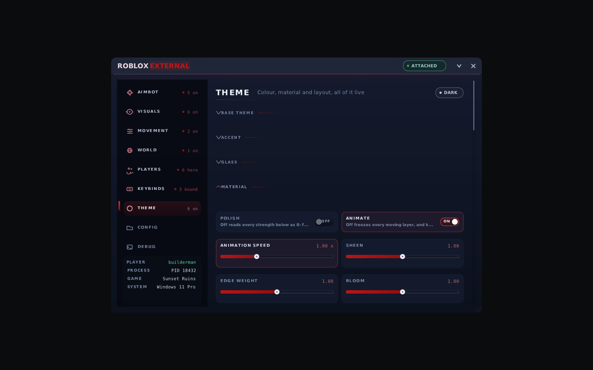
— · Polish off
Card paper. Same palette, same layout, same nine presets — the colour tokens and the material are separate layers, so this is what “no eye candy, please” costs: one click, and the tint is the only thing left telling you it is the Liquid preset.
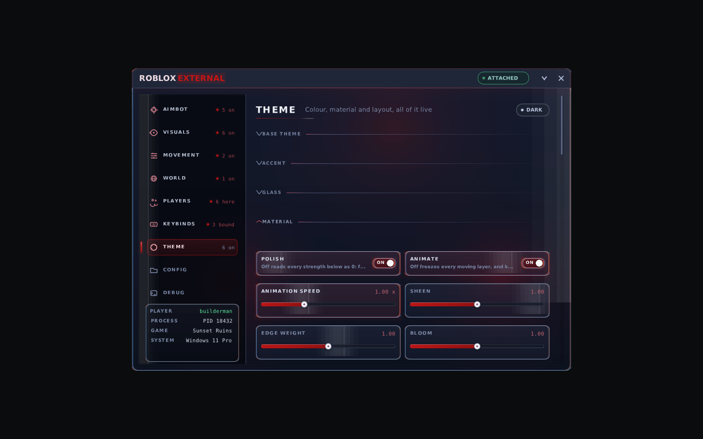
— · Polish on
The same frame with the switch on: accent blooms drifting in the header, a top-edge sheen on every card, the frost rim on the window, a highlight travelling along the slider tracks, and the rail's selected row lit. None of it is a different theme; all of it is one multiplier.